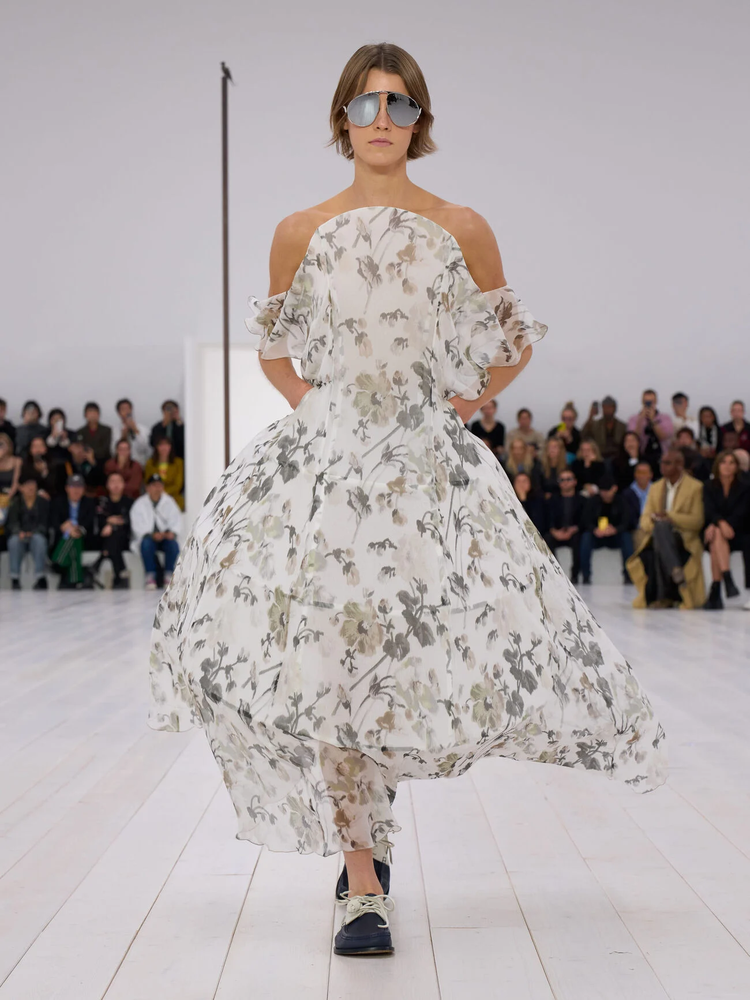
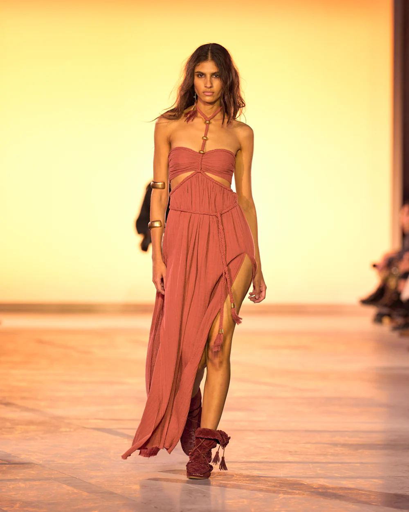

FLORAL IS BACK
Florals are back once again, proving their timelessness on the runways. From delicate daisies to bold botanical prints, designers are embracing nature’s patterns to celebrate the return of spring.
STATEMENT SKIRTS

Tailored and effortless, blazer sets are the ultimate go-to this spring. Whether monochrome or mixed with playful prints, they’re redefining power dressing for the season.
BOHO CHIC
The boho spirit is back, led by designers like Isabel Marant who are reviving fringe, lace, and layered textures. It's all about relaxed silhouettes and carefree elegance.